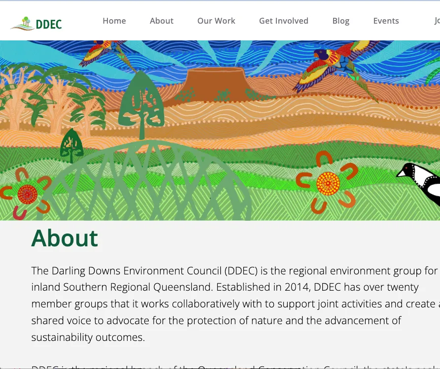
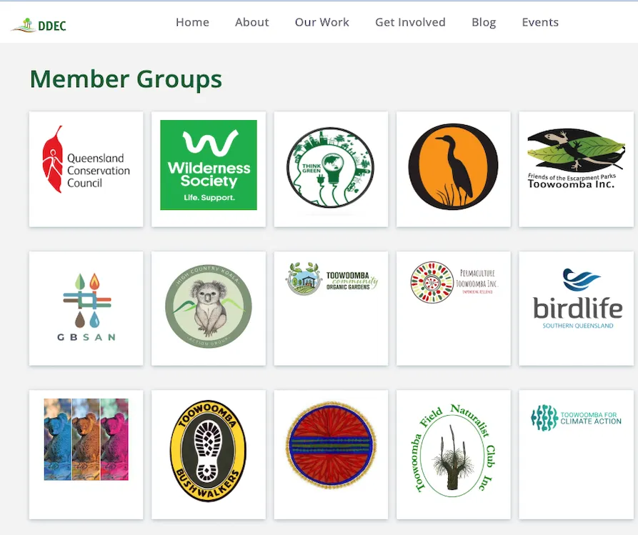
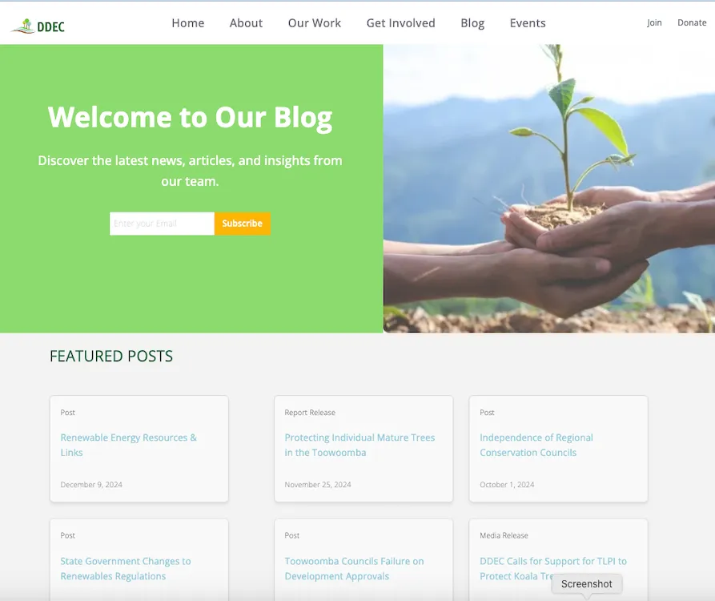
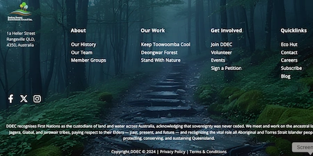

The Darling Downs Environmental Council (DDEC) is a community-based environmental organisation in the Toowoomba Region.
I am currently working on the on the redesign of the DDEC website. The website is built using React.js and is currently under construction.
Project Overview
- Build a responsive React.js website
- Set up secure and scalable hosting
- Migrate data to New CRM
- Integrate third-party donor platform
- Deploy Strapi Headless CMS for content management
- Optimize multimedia content for performance and accessibility

User Problems
Addressing key challenges faced by users:
- Slow page loading speeds
- Confusing navigation and inconsistent layout
- Lack of accessibility, failing WCAG 2.1 AA standards
- No CMS for streamlined content updates

Solutions
- Implemented advanced performance optimization techniques
- Designed a cohesive and intuitive navigation system
- Ensured full WCAG 2.1 AA compliance for accessibility
- Integrated Strapi CMS for effortless content management
- Adopted modern multimedia formats for improved user experience

Roles and Responsibilities
- Expertise in JavaScript and React development
- API integration and testing
- Semantic, accessible HTML implementation
- Responsive CSS design for all devices
- SEO best practices and optimization
- Adhering to WCAG 2.1 AA standards
